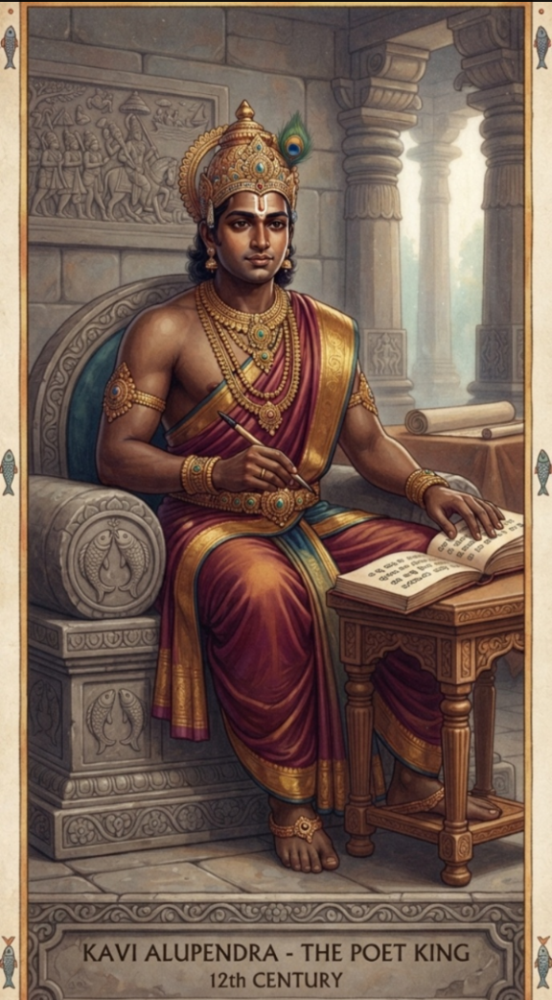
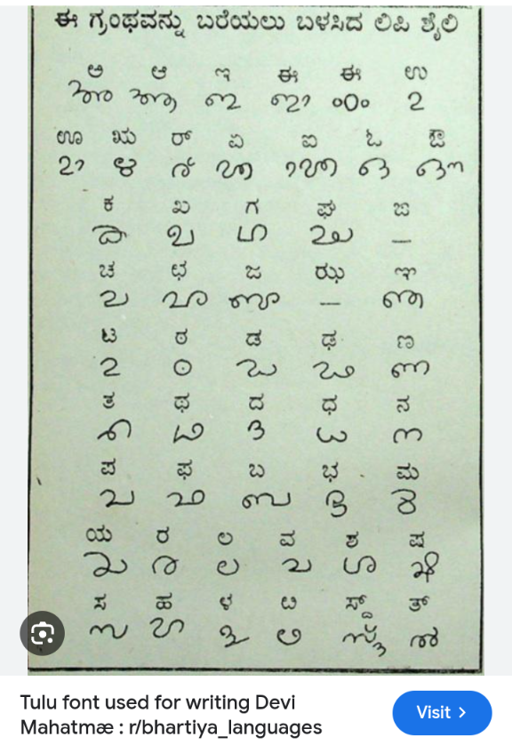

The West Coast’s First Poet King: A Legacy Built on Ink and Iron

The Aadhi Kavi: The First Poet King of the West Coast
Kavi Alupendra is historically recognized as the Aadhi Kavi—the First Poet—and the inaugural Poet King of the entire West Coast. His reign marked a definitive turning point, shifting the region from a collection of maritime trade outposts to a center of intellectual and literary power. By championing Tulu as a primary language of courtly and religious discourse, he secured its position as the foundational literary language of the entire region.
Devi Mahatme: The Dawn of Tulu Literature and Shaktism
The formal recording of the Devi Mahatme stands as one of the most significant cultural milestones in South Indian history. Tulu holds the distinct honor of being the first Dravidian language to formally record this foundational epic, a testament to the sophistication and reach of the Alupa dynasty. This accomplishment is irrefutable evidence of the deep-rooted influence of Shaktism in Tulu Nadu, reflecting a society where the divine feminine was central to both royal patronage and spiritual life. By elevating the Devi Mahatme into the regional script, King Kavi Alupendra institutionalized the worship of the Goddess as the heart of our civilization.

The script used to formalize the Devi Mahatme.
Tulu’s Position in the Dravidian Literary Landscape
| Language | Literary Status | Role of Early Scripture |
|---|---|---|
| Tulu | Aadhi Kavi Era Literary Tongue | First Dravidian language to formally record Devi Mahatme |
| Tamil | Classical Sangam Tradition | Early poetic anthologies |
| Kannada | Kavirajamarga Era | Codification of poetic standards |
Critical Attribution: Why Kavi Alupendra?
The attribution of the Devi Mahatme to Kavi Alupendra is not merely honorary; it is a critical necessity of 12th-century literary patronage. Alupendra’s court strictly adhered to the rigorous poetic and linguistic standards codified in Kavirajamarga. The structural integrity of the Tulu verses, their rhythmic adherence to the Sutra-like precision demanded by classic treatises, and the deliberate synthesis of regional phonetics with pan-Indian metaphysical themes, all point to a singular, authoritative royal hand. He did not merely commission the work; he codified the language to meet the highest standards of the age.
Historical Evidence

.png)
The evidence presented across these archaeological assets showcases the foundation of our history. King Kavi Alupendra, whose very title of Kavi (or Kabi) signifies his intellectual stature as a Poet King, stands as a central figure in this era. His sovereignty was defined not only by his patronage of the Devi Mahatme—the foundational epic that solidified Tulu as a literary language—but also by his tactical military prowess. As a sovereign ruler, he successfully restricted Chola invasions during the intense power struggles between the Hoysalas and the Cholas, a feat of leadership that secured the regional stability necessary to foster an environment where Tulu literature could flourish. This dual legacy of defending the realm while institutionalizing the language through the Devi Mahatme remains the cornerstone of our classical status advocacy.
The Digital Reconstruction: Recovering the Script
The Tuluva Guardian is spearheading the development of an independent Android keyboard for the Tulu-Tigalari script. By integrating native font support, we are breaking the digital barriers that have kept our literature inaccessible, ensuring the script remains a functional part of our identity.
Tracing the Source: Our Legal Quest for the Original Writings
Despite the historical weight of this legacy, the original manuscripts remain shrouded in institutional opacity. We at the Tuluva Guardian have initiated formal legal proceedings and utilized Right to Information (RTI) channels to trace the locations of these foundational writings. Our ongoing investigations are designed to break through the bureaucratic silence of the Department of Kannada and Culture. We are dedicated to the legal recovery and forensic revelation of these documents, ensuring that the true content—the very ink and iron of our ancestors—is brought back into the light of public scrutiny.
Fulfilling the Criteria for Classical Language Status
Tulu’s claim to classical status is structural. By providing evidence of high antiquity, a recorded literary tradition independent of modern influence, and the authorship of the Devi Mahatme as the first Dravidian epic of its kind, Tulu satisfies the essential criteria for classical recognition. This historical reality demands that Tulu be formally classified as a classical language, preserving its rightful place in India's intellectual heritage.
Through the Tuluva Guardian, we continue the sacred path of our ancestors, reclaiming the dignity of the language that first sang the praises of our coast.